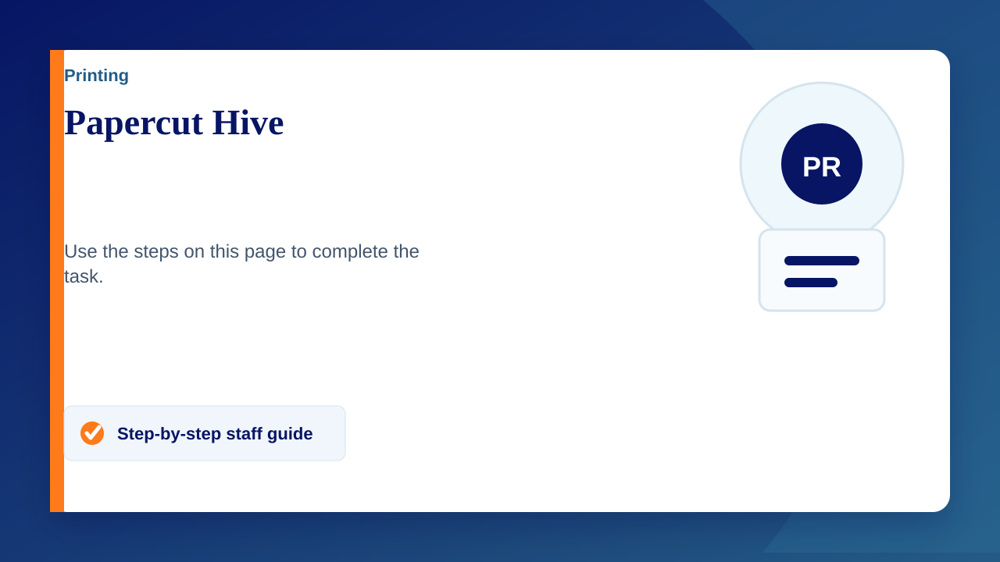
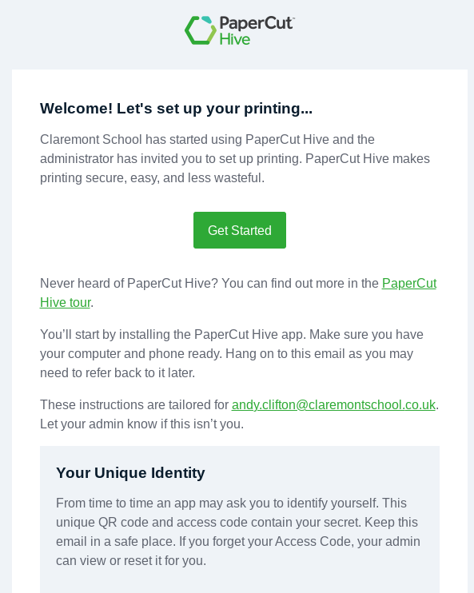

Papercut Hive is the printing system. Jobs can be released from your phone, the Access Code or an Access Card.
Below will show you the basics to get started with it.
Getting Started
- You will receive an email that looks like this (photo on the right side) - Search for "hive" if you cannot locate the email
- Click on 'Get Started'
- School Desktop PCs and Chromebooks will have step one already completed upon clicking on 'get started' - You are now able to print just like before and can ignore step 4
- Laptop and personal device users will need to click the download link under step1 in the email and install that file.
Mobile release/printing
- Download the mobile app
- Can the QR code (also within the email shown on the right)
- When a print job has been sent you can now release it using the mobile app
Chrome extension - If not already installed
Video Guide
Make sure Sync is on before following the video
